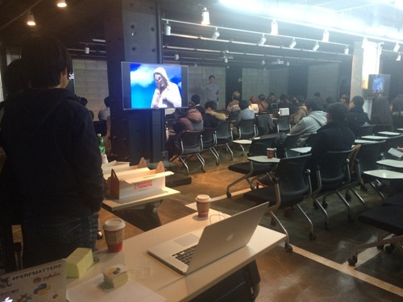
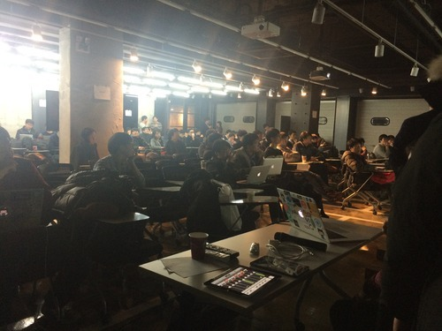

2014 DEC 미니파이콘 행사 후기.
http://bloodevil.com/pages/minicon_2014_12.html
0. 준비
준비를 한다고 했는데 마지막 1주일안에 병이나서 진짜 걱정이 엄청 됐었다. 요새 감기가 노로랑 손잡고 같이 온건지 원래 계절바뀌면 오던 장염이 때맞춰 온건진 모르겠지만 하루 반 정도 정신이 거의 나가 있었고 하루는 위아래로 쏟느라 그냥 쌩으로 시간을 날렸다.
원래 생각한것의 10%, 말한거의 50%만 해도 잘한거라고 생각해서 개인적으로 %를 늘리려는 것 보다는 더 많이 생각하는 쪽으로 어릴때부터 방향을 잡았다. 그러니까 원래는 생일케잌이라도 사려고 했다 (….부끄러움을 많이타서 이런 이벤트는 못하기때문에 안함…) 하면 참 재미있었겠지만… 흠.

개인적으로 장소도 괜찮았고 거의 일주일 가까이 전화하고 업체랑 메일하면서 삽질한 스티커가 꽤 잘 나와서 좋았다. 거기에 위에 코팅만 한번 입히면 완벽한데 하….
1. 발표 섭외
발표를 섭외하려고 보니, 거기다가 라이트닝을 하려고 하다 보니 … 홈페이지가 있어야 했고… 이벤트링크가 따로 없어서 내 홈페이지에 땄고.. 임시페이지라고 생각해서 아무런 생각없이 minicon_2014_12.html 이런 파일명으로 만들었는데 이게 끝까지 가버렸다. 원래는 잠깐 하고 event.pycon.kr로 가려고 했는데.. 중간에 링크바꾸기도 애매하더라… 이럴줄 알았으면 /event/2014DEC/ 정도에 index로 했지!!
gif 도 꽤 공을 들였고 (나름)

사실 저게 gif가 아니었는데 gif로 출력하고나니 해상도가 엄청 떨어져서 좌절을 봄….
여튼 페이지를 뚝딱 만들고 구글 폼을 연결해서 발표자들을 받았고 받은분들 모두 발표를 했는데 당일날 들어보니 의외로 퀄리티가 너무나 높아서 감동… ipython extension발표만 망한거같다. ㅋ 특히 김영후님 세션은 질문을 많이 안하셨으면 분명 내가 한권 가졌을꺼같다. (…넝담)
그리고 마지막 라이트닝 현장에서 하신분에게는 레고를 보내드릴 예정이라 메일이 갈 껍니다. 하하하.(내맘대로)
2. 참가비
진짜 정말 참가하신 모든분들께 감사를 드린건 어느하나 “계좌이체 안되나요"를 안하셨다는 점이다. 같이오신분들에게 바로 돈을 구해서 주시거나 사실 이것도 한두분정도였고 세미나를 위해 만원을 챙겨왔다는점이 가장 와닿았다. 최근 진상들을 많이봐서 "이세상은 망할꺼야! XX” 라는 마음가짐으로 꽤나 방어적이 되었는데 뭐랄까 “아직 세상은 아름답네” 를 느꼈다고 할까. 진짜로..
계좌이체하신 한분은 운영진이라 따로 받아냄. 이번엔 운영진이고 발표자고 전부 걷었습니다. 혹시 못내신분들은 신한은행 110 … 이아니라 내년도 파이콘에 기부를 …
3. 음식
사실 음식 시키면서도 ㅆㅂ 모자라면 대충 운영진한테 삥뜯지뭐 정도의 생각(…네 진심) 이었는데 대충 시키고나니 -4만원 정도 내의 오차였다. 아직 내 암산이 죽지 않았구나 (뻥) 와 어떻게든 다 살게 되어있어 라는 운을 시험했다고나 할까…
여기서 대충 회계 정리를 하자면
피자 25판 도미노 ₩593,720
치킨 9마리 3군데 ₩146,000
음료수_1 ₩25,000
종량제봉투 ₩3,840
음료수_2 ₩55,900
던킨도너츠 ₩29,500
던킨도너츠2 ₩36,300
스티커 ₩50,900
=======================
합 ₩941,160
을 쓰고 스티커는 1000장을 찍었고 많이 남았으므로 다음 파이콘때도 쓸 예정입니다.
참가비 ₩850,000
티셔츠 ₩50,000
===================
합 ₩900,000
그래서 딱 41,160원 손해봤지만 10월 세미나 2만 얼마에서 넘어와서 대충 회계는 그정도인것으로.. 10월꺼랑 합치고 이것저것 내년꺼, 작년꺼 예산 정리해야해서 자세한것은 원하시는 분께만 보여드립니다. (영수증 있음)
4. 아쉬운점.
나한테는 마루180 지하 세미나장에서 세미나를 준비한것이 처음이어서 좀 헤맸다는 점과 내가 할 발표준비를 제대로 못했다는 것 정도? 원래는 김슬님과 둘이 30분 발표로 꾸미려고 했는데 세션 한분을 더 모시게 되서 저희가 빠졌다는 훈훈한 소식… 그리고 이건 아쉬운건 아니지만 발표를 집중해서 듣다가 갑자기 참가자를 받아야 해서 집중해서 못들었다는 것 정도… 그리고 아 다음 ipython_mongo 빨리 python3으로 올려야지 .. 정도.

5. 소감.
개인적으로는 20살때 리눅스 동아리에 들어가게 되면서부터 참 행사를 많이 경험한 편이라고 생각한다. 대학생리눅스유저그룹, PHP KOREA, PYCON 까지. 직접 운영진으로 뛰게되면 좋은점은 모르면 안된다는 압박감때문에 공부를 하게된다는 점이고, 좋은 자극을 많이 받게 된다는 점이다. 타고난 게으름덕분에 이것저것 만들어보려는 것도 있긴 하지만 스스로 정리가 안되는 점이 많았는데 이런 행사들은 한번 정리를 할 수 있게 만들어 준다.
열정페이와 오픈소스 둘중에 하나를 고르라고 한다면 사실 이런 행사는 열정페이에 가깝다. 남는건 있지만 소모적인 것이 사실이다. 행사준비하면서 사실 코드를 짜는건 홈페이지정도밖에 없고, 이번엔 구글 드라이브의 버그도 찾고 그것땜에 딴짓도 좀 하고 했지만 음료수 사러 다니고, 음식 주문하고, 참가비 받고, 스티커 만들고 하는일은 사실 룰루랄라 즐거운일만은 아니기 때문이다. 근데 이번에 5분카레로 설명해주신 현우님 말씀을 대입해보면 시켜서 하는 일은 아니고, 남는건 있는걸 보면 오픈소스에 가깝다고도 볼 수 있을 듯 하다. 그렇다고 열정페이가 없는건 아니지만 ㅎㅎ
뭐 열정페이가 없으면 어떠랴. 오픈소스에도 사실 열정페이가 없다고 말한다면 거짓말인걸. mongodb 컨트리뷰트를 하면서 느낀건, 오픈소스는 열정페이가 있긴 있다. 하지만 조금 다를 뿐이다. 어떤걸 느꼈느냐가 중요할 뿐이다. 같은일을 해도 사람들은 다르게 느끼기 때문이고, 같은걸 경험해도 모두 다른것을 배운다. 한가지 좋은건, 이런일을 하면서 진상을 만나면 “xx 뭐 어쩌라고” 할수 있다는 점이랄까. 하하.. 아직 안만나봐서 못해서 참 다행이다.
여튼 내일 출근해야지.